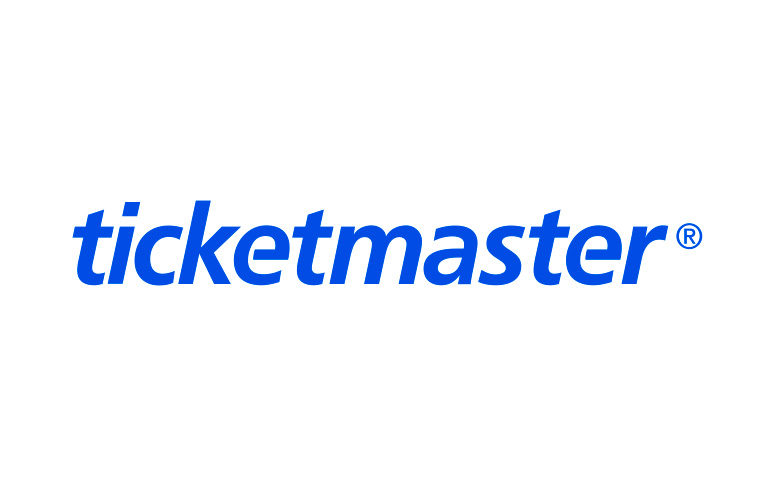

Cada vez es más habitual que compremos entradas por Internet cuando vamos a ir a cualquier lugar. Nos ahorramos colas de espera y nos aseguramos que haya un pase a la hora que queremos.
Hay todo tipo de páginas y muchas de ellas seguro que las has utilizado alguna vez pero conviene que leas nuestros consejos para evitar estafas y que siempre recurras a webs fiables que no vayan a quedarse tu dinero y a no darte la entrada del concierto o festival que quieres.
En esta página web venimos a recomendarte los mejores lugares para conseguir entradas para conciertos de manera rápida y segura.
Como primera opción tenemos la página de Ticket Master, una empresa de venta de entradas que funciona tanto a nivel local como global. Es considerada una de las mejores a día de hoy debido a la seguridad que ofrece a la hora de realizar el pago.

Otra de las webs de moda para comprar entradas es Eventbrite y la verás habitualmente en muchos eventos. Esta empresa compró Ticketea, seguro que has escuchado hablar de ella, en 2018. Así que ahora cuenta con entradas para eventos online o para eventos presenciales algunas ciudades de España. Los usuarios pueden crear su propio evento para que otras personas lo adquieran utilizando esta plataforma.